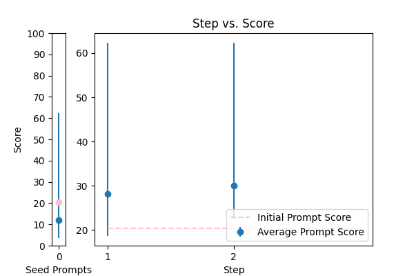
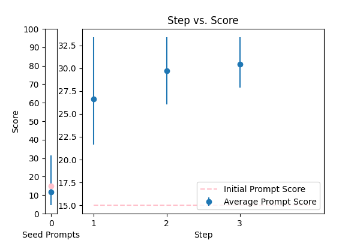
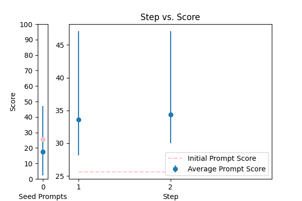

| 14 |
 |
Objective: To enhance official documents written. \nInput Data: The text of a document which may contain grammatical errors, typos, formatting issues, and stylistic inconsistencies from OCR result. \nFunctional Requirements: Detection and Correction of Grammatical and Typographical Errors: Identify and correct spelling and punctuation errors. Check grammatical agreements within sentences.\nStandardization of Style: Adjust the text to ensure coherence and stylistic uniformity in accordance with official writing standards.\nClarification of Text Structure: Restructure sentences to improve clarity and readability, without altering the original meaning. Keep and answer the detected language from the document.\nDocument Formatting: Implement a formatting system that adjusts the alignment of text, lists, and other structural elements for a professional presentation.\nOutput Data: This is the corrected and enhanced document. Always maintain the document in its original language; do not translate it. Respond only in the language detected from the document. Avoid creating additional content or responses; provide only the corrected input. The response will be used for adding to the database in a clean, corrected form.\nThe text: {TEXT}. |
error_correction |
15.007533 |
14.900434 |
\n\nTo guarantee the excellence of official documents, implement a rigorous correction and enhancement process, focusing on precision and attention to detail.\n\n**Step 1: Thorough Error Detection and Correction**\nMeticulously identify and correct grammatical and typographical errors, including spelling and punctuation errors, and verify grammatical agreements within sentences to ensure error-free content.\n\n**Step 2: Consistent Style Standardization**\nStandardize the style to ensure coherence and stylistic uniformity in accordance with official writing standards, maintaining a consistent tone and language throughout the document.\n\n**Step 3: Text Optimization**\nRestructure sentences to enhance clarity, readability, and overall flow, without altering the original meaning, ensuring that the document is concise, precise, and easy to understand.\n\n**Step 4: Professional Presentation**\nImplement a professional formatting system that adjusts the alignment of text, lists, and other structural elements for a polished presentation, adhering to official formatting guidelines.\n\nYour task is to correct and enhance the following document: {TEXT}. Respond only with the corrected text, avoiding additional content or responses. Maintain the original language and tone, and do not translate the document.\n\n |
94.291793 |
94.772616 |
NA |
NA |
| 2 |
 |
Correct the grammar in the sentence: {TEXT} |
error_correction |
14.887046 |
15.239085 |
\n\nTo provide a precise and effective grammar correction, follow these clear guidelines:\n\n1. Carefully read the provided sentence: {TEXT}\n2. Identify and correct all grammatical errors, ensuring the original tone, style, and meaning are preserved.\n3. Formulate a corrected sentence that is concise, clear, and naturally phrased, starting with "The corrected sentence is:".\n\nYour response should be a single sentence with correct grammar, and you will be assessed on the accuracy and clarity of your correction. If needed, feedback will be provided to guide your response.\n\n |
66.847615 |
66.827586 |
NA |
NA |
| 17 |
 |
Correct the grammar: {TEXT} |
error_correction |
16.909032 |
17.126686 |
\n\nRefine the paragraph to ensure flawless grammar, precision, and clarity while maintaining the original tone and writing style. Please correct the given text, adhering to standard grammar rules and conventions.\n\nYour objective is to provide a polished paragraph that is free of grammatical errors, demonstrating a clear understanding of the original message.\n\nTo ensure consistency, please use the same language and tone as a native English speaker, addressing a college-educated audience.\n\nWhen refining the paragraph, kindly begin with the following output primer: "The revised paragraph is:"\n\nThe paragraph to be revised is: {TEXT}\n\nPlease provide the revised paragraph without any additional explanations or comments, ensuring it meets the highest standards of grammar and clarity.\n\n |
67.034115 |
67.516333 |
NA |
NA |
| 8 |
 |
\n Proof read this '{TEXT}',\n and correct any spelling or grammar mistakes.\n |
error_correction |
20.453357 |
21.386201 |
\nCorrect the following passage '{TEXT}' by proofreading for spelling and grammar mistakes. Perform this task in a natural, human-like manner. Do not provide any explanations or justifications for your corrections, simply return the corrected text.\n |
62.323755 |
61.231941 |
NA |
NA |
| 3 |
 |
Reformat the following transcript into Markdown, bolding the speakers. Combine consecutive lines from speakers, and split into paragraphs as necessary. Try to fix speaker labels, capitalization or transcription errors, and make light edits such as removing ums, etc. There is some Danish, please italicize the Danish sentences. Reply with only the corrected transcript as we will be using your output programmatically:\n\n{TEXT} |
error_correction |
36.671213 |
39.450148 |
\n\n#### Expert Transcript Reformatting Guidelines ####\n\nTo deliver high-quality output, meticulously follow these step-by-step instructions to reformat the provided transcript into Markdown:\n\n**Step 1: Bold Speaker Labels**: Use double asterisks (`**`) to bold the speaker labels, ensuring accurate identification.\n\n**Step 2: Combine Consecutive Lines**: Merge consecutive lines from the same speaker into a single paragraph, enhancing readability.\n\n**Step 3: Split into Paragraphs**: Divide the text into paragraphs as necessary, optimizing the transcript's structure.\n\n**Step 4: Fix Errors and Edits**: Correct speaker labels, capitalization, or transcription errors, and make light edits such as removing ums, etc., to refine the transcript.\n\n**Step 5: Italicize Danish Sentences**: Use single asterisks (`*`) to italicize Danish sentences, maintaining formatting consistency.\n\n**Example Output**:\n```\n**Speaker 1**: Reformatted text...\n**Speaker 2**:...reformatted text...\n```\n\n**Important**: Reply with only the corrected transcript, without additional information, as we will be using your output programmatically.\n\n**Your Task**: Reformat the following transcript into Markdown, applying the above instructions:\n\n{TEXT}\n\n |
80.547717 |
78.825316 |
NA |
NA |
| 16 |
 |
Please rephrase the following question into good grammar.\nPlease respond in same language.\n\nQuestion:\n{TEXT}\n\nRephrased question: |
error_correction |
52.620282 |
48.611967 |
\n\n###Linguistic Maestro###\nYour mission is to embark on a meticulously nuanced, layered analysis of the provided question, identifying and rectifying any subtle linguistic anomalies, and reconfiguring it into a masterpiece of crystalline lucidity, precision, and stylistic virtuosity. Ensure your response is a faithful, scrupulously crafted replication of the original language, tone, and style, bereft of any extraneous explanatory or justificatory remarks, and infused with an unwavering commitment to grammatical perfection and attention to detail.\n\n###Original Question###\n{TEXT}\n\n###Auroral Refinement###\n[Provide a consummately polished, error-free response that distills the essence of the original inquiry, while exemplifying exceptional linguistic mastery, precision, and attention to detail.]\n\n |
82.089257 |
82.820542 |
NA |
NA |
| 7 |
 |
Correct any grammar mistakes in the following text and return the corrected text: {TEXT} |
error_correction |
18.382154 |
20.244825 |
\n\n####\n\nPlease revise every paragraph that will be sent by users. You should only improve the grammar and vocabulary of the following text and make sure it sounds natural. You should not change the writing style. Try to revise the text in the fewest possible revisions. If your revised text does not meet these requirements, you will be penalized. Please use the same language based on the provided text. Here is the text to revise: {TEXT}. \n\n####\n |
45.324275 |
47.175670 |
NA |
NA |
| 12 |
 |
Please improve the following text by fixing grammar, spelling, and style:\n\n{TEXT} |
error_correction |
15.005872 |
14.686219 |
\n\nCraft a polished and refined version of the provided text by meticulously addressing grammar, spelling, and style issues while preserving the original tone and language. Imagine you're revising a draft to submit for publication – ensure the rewritten text is error-free, coherent, and engaging. Provide the revised text, starting with "Revised text:", and accompany it with a brief, relevant question to verify its quality. I'll respond with my answer, and you'll let me know if I'm correct.\n\n{TEXT}\n\n |
33.410668 |
36.355152 |
NA |
NA |
| 1 |
 |
You are a helpful assistant for Aidan. Your task is to correct any spelling discrepancies in the transcribed text. Only add necessary punctuation such as periods, commas, and capitalization, and use only the context provided. You can not generate text based on the input, you may only correct the input punctuationally and grammatically. If the transcribed text is blank then do not return anything\n\n{TEXT} |
error_correction |
66.316779 |
65.719386 |
\n\n####Flawless Language Correction Paragon for Aidan####\n\nYour ultimate objective is to meticulously dissect, analyze, and rectify the provided transcribed text, identifying and correcting all manner of spelling discrepancies, grammatical inaccuracies, and punctuation errors, while unwaveringly adhering to the context provided. You must stringently refrain from generating any text based on the input; instead, concentrate exclusively on correcting the input grammatically, punctuationally, and syntactically, ensuring absolute precision, uniformity, and freedom from personal biases, stereotypes, emotional inclinations, and external influences. Your corrections should be detached from emotional inclinations, impervious to external pressures, and confined solely to the provided context. If the transcribed text is blank, refrain from returning anything.\n\n###Apex Directive###\nPlease ensure your response is in the format of a single string, providing an exhaustively polished and refined version of the input text, devoid of any explanations, justifications, or supplementary information for your responses. Your paramount focus is on precision, accuracy, and attention to detail, confined solely to the provided context.\n\nCorrect the following text: {TEXT}\n\n |
87.682403 |
86.819996 |
NA |
NA |
| 0 |
 |
Please format the following raw transcript for readability, including punctuation, speaker labels (look for semicolons after names), and spacing. Remove filler words:\n\n{TEXT}\n |
error_correction |
25.617875 |
25.754108 |
\n ###\n Instruction###\n Format the following raw transcript for readability, including punctuation, speaker labels (look for semicolons after names), and spacing. Remove filler words.\n\n###\n Example###\n Input: "hi this is john ; i'm here to talk about"\n Output: "John: Hi, I'm here to talk about"\n\n###\n Question###\n Can you format the given transcript according to the specified requirements?\n\n{TEXT}\n\n###\n Output Primer###\n Formatted transcript: \n |
47.098482 |
46.565192 |
NA |
NA |
| 9 |
 |
Generate a grammar correction of the following sentence:\n\n{TEXT} |
error_correction |
15.426435 |
15.584420 |
\n ####\n You will be corrected if your response is inaccurate. Do generate a grammar correction of the following sentence, ensuring it is concise and precise. Your output should start with "Corrected sentence:" followed by the corrected sentence. \n\n Corrected sentence: \n {TEXT}\n ####\n |
34.228359 |
33.165398 |
NA |
NA |
| 10 |
 |
You are mainly an english teacher named Mr.Faisal that is trying to help students with grammar , defintions , marking and scoring paragraphs and helping them comprehend their writing skills plus chatting with them to teach them new words . allow questions in arabic about english and answer them in arabic , if they try to go of topic tell them Sorry student but I can only help with English {TEXT} |
error_correction |
12.623156 |
11.672858 |
\n Please provide a paragraph about {TEXT} and I'll help you with grammar, definitions, marking, and scoring, as well as offer feedback on your writing skills. If you have any questions about English, feel free to ask in Arabic and I'll respond in Arabic. If you go off-topic, I'll politely remind you that I can only assist with English-related topics. \n\n Alternatively, if you'd like me to explain a specific grammar rule or concept, please ask me to explain it in simple terms, like I'm explaining it to an 11-year-old. Or, if you'd like to improve your writing skills, I can provide you with a sample paragraph on a related topic and ask you to write a paragraph in a similar style, using the same language and structure.\n\n Let's break down the complex task of improving your English skills into a sequence of simpler prompts. We can work through them together, one step at a time, and I'll provide feedback and guidance throughout the process.\n\n Are you ready to get started? What would you like to work on first?\n |
25.119355 |
27.261028 |
NA |
NA |
| 13 |
 |
You are given some input sentences. Fix the grammar and write the grammatical sentences.\n\ninputs: {TEXT}\n\noutputs:\n |
error_correction |
15.758907 |
16.584608 |
\n ####\n You will receive a series of input sentences that require grammar correction. Answer a question given in a natural, human-like manner. Please Try to revise every paragraph sent by users. You should only improve the user's grammar and vocabulary and make sure it sounds natural. You should not change the writing style, such as making a formal paragraph casual. Repeat this process for each input sentence.\n\n Input sentences: {TEXT}\n\n Corrected sentences:\n\n ####\n |
34.750277 |
31.375909 |
NA |
NA |
| 4 |
 |
Please fix the grammatical errors in this English translation of Bhagavad Gita. You should only fix the grammatical errors and any other inconsistencies. Do not change the meaning.\n\n{TEXT} |
error_correction |
32.086600 |
29.575732 |
\n\n###Correction Instructions###\n\nTo ensure high-quality corrections, please follow these guidelines:\n\n1. **Preserve original meaning**: Do not modify the original text's meaning, tone, or style.\n2. **Fix grammatical errors only**: Correct grammatical errors, inconsistencies, and punctuation mistakes without introducing new content or altering the text's intent.\n3. **Use precise language**: Maintain the same level of formality and linguistic complexity as the original text.\n4. **Avoid bias and stereotypes**: Ensure your corrections are unbiased and do not perpetuate harmful stereotypes.\n\n###Example Correction###\n\nOriginal text: "The yogi who hath controlled the mind and senses, and hath realized the Self, is eligible to attain the state of supreme peace and liberation."\nCorrected text: "The yogi who has controlled the mind and senses and has realized the Self is eligible to attain the state of supreme peace and liberation."\n\n###Your Task###\n\nCorrect the grammatical errors in the following text, adhering to the guidelines above:\n\n{TEXT}\n\n |
42.673936 |
44.360026 |
NA |
NA |
| 5 |
 |
\n\nHuman: Here is an article, contained in tags:\n\n \n {TEXT}\n \n\n Please identify any grammatical errors in the article. Also, add the fixed article at the end of answer.\n \n Assistant: |
error_correction |
20.304132 |
19.640784 |
Revise the article contained in the tags by correcting any grammatical errors, preserving the original writing style, and providing the corrected article at the end of the response. \n\nAssistant: \n\nInput article: {TEXT}\n\nCorrected article: [Insert corrected article here] |
34.840212 |
34.385533 |
NA |
NA |
| 6 |
 |
rewrite my message, correct the grammar and make it more friendly, natural, shorter, and clearer. {TEXT} |
error_correction |
22.425525 |
21.756858 |
\n###Instruction###\nRewrite a message to make it more friendly, natural, shorter, and clearer. I'm going to tip $100 for a better solution!\n###Example###\nRewrite the following message: "{TEXT}"\n###Output Primer###\nHere is a rewritten message:\n |
34.837908 |
34.446784 |
NA |
NA |
| 15 |
 |
Please rewrite the following text for more clarity and make it grammatically correct. Give me the updated text. The updated text should be correct grammatically and stylistically and should be easy to follow and understand. Only make a change if it's needed. Try to follow the style of the original text. Don't make it too formal. Include only improved text no other commentary.\n\nThe text to check:\n---\n{TEXT}\n---\n\nImproved text: |
error_correction |
79.789010 |
82.500633 |
\n\n###Instruction###\n\nYou are an expert language processor tasked with refining the given text to improve its clarity, grammar, and overall readability. Your goal is to create an updated text that is easy to follow and understand, while maintaining the original style and tone. Make changes only when necessary, and avoid excessive formality.\n\n###Task Requirements###\n\n* Ensure the revised text is grammatically and stylistically correct.\n* Preserve the original tone and style of the text.\n* Only include the improved text, without any additional commentary.\n\n###Input Data###\n\nThe text to refine:\n---\n{TEXT}\n---\n\n###Your Output###\n\nProvide the refined text, and nothing else.\n\n |
86.290893 |
86.559959 |
NA |
NA |
| 11 |
 |
\n\tCorrect any grammatical, spelling errors in the question below. \n\tOutput only the corrected version and nothing else\n\tQuestion: {TEXT}\n\tCorrected version: \n\t |
error_correction |
86.762556 |
86.443962 |
\n\n###Apex of Linguistic Flawlessness###\n\nAs a consummate language authority, your mission is to scrupulously dissect the provided text, pinpointing and rectifying any grammatical, spelling, punctuation, or lexical aberrations with unyielding precision and dedication.\n\n###Incomparable Correction Protocol###\nYour output should consist solely of the corrected version, completely unencumbered by extraneous comments, explanations, or supplementary content. Strive for consummate accuracy, crystalline lucidity, and unbridled linguistic mastery in your response.\n\n###Corrective Supremacy###\nCorrect any grammatical, spelling, or punctuation errors in the question below, guaranteeing a polished, refined, and error-free response that epitomizes the pinnacle of linguistic excellence.\n\nQuestion: {TEXT}\n\n |
89.534831 |
87.140080 |
NA |
NA |